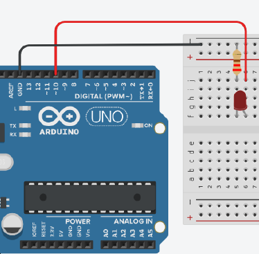
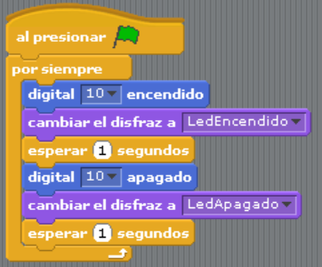

Una salida digital es un pin que puede configurarse para enviar una señal de "alto" o "bajo". En términos sencillos, "alto" significa que el pin envía una señal de 5V (corriente) y "bajo" significa que el pin envía 0V (sin corriente). Esto es útil para controlar dispositivos como LEDs, motores, y otros componentes electrónicos.
Vamos a desarrollar el mismo ejercicio que en el tema anterior, pero ahora en vez de usar el LED integrado (Pin 13), utilizaremos el pin 10 como salida digital. Para ello, utilizaremos los siguientes componentes: 1 LED, 1 resistor 220ohms, cables m/m, protoboar y tarjeta UNO con cable USB.
Armar el circuito como muestra la imagen:
Ahora vamos a realizar el programa en S4A, recuerda conectar la placa al puerto USB y comprobar si existe comunicación. Haz clic en los siguientes enlaces para descargar los disfraces que utilizaremos en el programa: LedApagado y LedEncendido
Realizar un simulador de un semáforo peatonal. Tanto la luz de avanzar como la de detenerse dura 6 segundos. Utiliza los pines digital 10 y 11 para tal fin, e importa el disfraz de un semáforo peatonal que cambie de acuerdo a lo que muestra el circuito.
{kind=link}
{kind=link}
{kind=link}